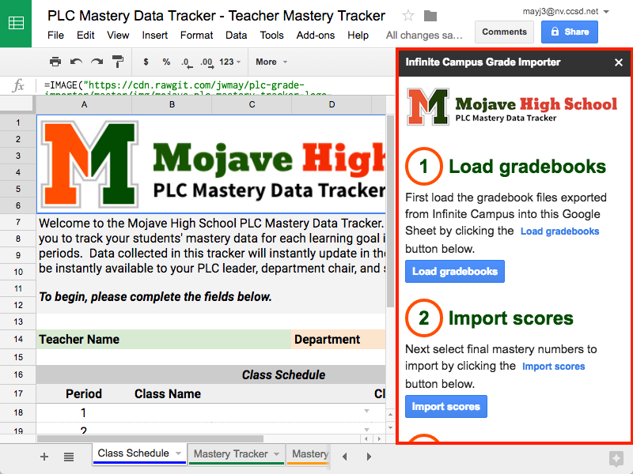

Install the Grade Book Importer Plugin
The instructions below will guide you through the process of installing the Infinite Campus Grade Importer plugin for Google Sheets.
- Open your copy of the Teacher Mastery Tracker to launch Google Sheets and click the Add-ons menu at the top of the page
- Click Get add-ons... in the dropdown menu that appears
- Click the All dropdown menu in the upper-left corner of the window that appears and select nv.ccsd.net collection from the dropdown menu
- Find and click on the Infinite Campus Grade Importer plugin to reveal more information
- Click on the + Free button to install the plugin
- Scroll down to the bottom of the window that appears and click the Allow button to give the plugin permission to run in your Teacher Mastery Tracker
- Click the x in the upper-right corner of the pop-up to dismiss the usage instructions
- The plugin is now ready to use by following the instructions in the sidebar 
Export Grade Books from Infinite Campus
The instructions below will guide you through the process of exporting your grade book files from Infinite Campus.
-
Login to Infinite Campus

-
Select Reports (Grade Book) from the left-hand navigation column

-
Use the Report dropdown to select Grade Book Export

- Check to make sure you have the correct Term and Section selected, then click the Generate Report button
-
Save the file to your computer using the filename pX.csv,
where X is the period number (files must be saved this
way for the grade importer plugin to work correctly)

-
Repeat step 4 changing the Section to the next class period to export

- Repeat step 5 using the same naming convention (pX.csv) changing X to the new class period (for CC classes, the file should be named pXcc.csv)
Import Grade Books from Infinite Campus
The instructions below will guide you through the process of importing your Infinite Campus grade book files into the Mastery Data Tracker using the Infinite Campus Grade Importer plugin for Google Sheets.
- If the Infinite Campus Grade Importer sidebar is not showing, click Add-ons in the top menu
- Select Infinite Campus Grade Importer from the dropdown menu and click on Start to launch the sidebar
-
Begin step 1 by clicking the Load gradebooks button

-
Drag and drop your exported Infinite Campus files or click the Select files
from your computer button to select your files (if your files are already on
Google Drive you can click the Google Drive tab to locate the files there)

- Click the Upload button to import the files
- Click the Close button to complete step 1
- Begin step 2 by clicking the Import scores button
- Click the Select gradebooks button to import scores for the checked class periods (all selected class periods must have identical assignments for the plugin to work properly)
- Check the assignments whose scores will be imported then click the Select assignments button
- For each selected assignment, choose a learning goal number using the Select learning goal dropdown, then give the learning goal a title (if the imported scores are a re-take, check the Re-take box)
- Click the Import mastery data button
- Click the Close button to complete step 2
- Begin step 3 by clicking the Delete sheets button
- Click the DELETE GRADEBOOKS button to remove the checked sheets from the data tracker (your imported scores will not be removed)
- Click the Close button to complete step 3
- Click the x in the upper-right corner of the sidebar to close it